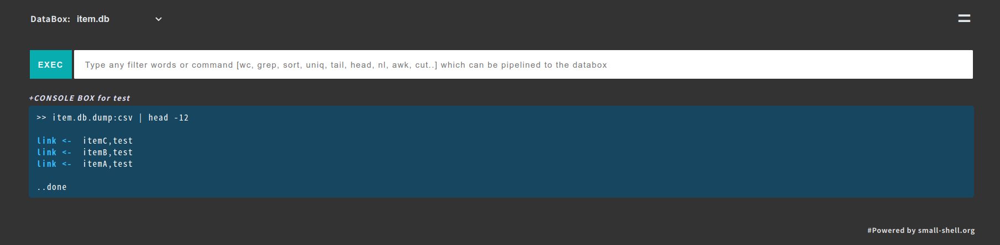

Quick start
This is a quick start guide for ubuntu/debian with small-shell default web server that's included small-shell package.
Setup Env@ubuntu/debian
# addd user
sudo useradd -s /sbin/nologin small-shell
# update apt list and install curl
sudo apt update
sudo apt install curl
# install bc for debian just in case
sudo apt install bc
# install npm/php libraries, php will be used for encoding and node.js will be used for writing WEB server
sudo apt install npm
sudo apt install php
##install jq
sudo apt install jq
Installation
# install
cd /usr/local
sudo git clone https://github.com/small-shell/small-shell.git
sudo chown -R small-shell:small-shell /usr/local/small-shell
sudo chmod 755 /usr/local/small-shell/adm/gen
Generate Databox
Then Let's generate databox as the data store of WEB APP. DATA shell details are in DATA shell tour
sudo /usr/local/small-shell/adm/gen -databox
#-> dialog will be started
Note
You can exit dialog anytime with ctrl + C
Dialog
In this expamle, "item_name" is set as priary key.
Databox Name: item.db
primary_key(col1): item_name
primary_key label: Item Name
Do you want to add column to dataset? (yes | no): yes
key(col2) name: description
key(col2) label: Description
Data Type (text | select | radio | checkbox | email | num | tel | date | date-time | url | textarea | file | pdls | mls): text
Require to input each time? (yes | no): yes
Do you want to add more column to dataset? (yes | no) : no
Data box will be generated by following order, please check it
-----------------------------------------------------------------
Databox Name:item.db
#primary_key
name="item_name"
label="Item Name"
type="text"
option="required"
#column2
name="description"
label="Description"
type="text"
option="required"
-----------------------------------------------------------------
Is it OK? (yes | no): yes
Generate Base APP
Once databox is ready, let's generate Base APP, detail of this APP is in APP shell tour
sudo /usr/local/small-shell/adm/gen -app
In the dialog, if you will use https, please input path of cert and key of ssl. these cert and key will be copied to /var/www/app during dialog and https web server will be started automatically.
Note
If you don't have any ssl certificate, ofcourse you can choose http as potocol. and if you want, you can generate ssl certificate by using Let's encrypt. please check cook book
Type of APP (1.BASE | 2.FORM | 3.SCRATCH): 1
Type of server (1.small-shell WEB srv | 2.other WEB srv): 1
protocol (http | https): https
WEB Server FQDN or IP addr (e.g. 192.168.10.1): ec2-XX-XX-XX-XX.us-west-2.compute.XXXX.com
ssl cert path : /root/cert.pem
ssl privare key path : /root/private.pem
Do you need to use chain certificate ? (yes | no): no
Add user
Following example is adding user name "test", "test" can initialize and get base64 key by accessing the URL that is generated by ops command.
sudo /usr/local/small-shell/adm/ops add.usr:test
By the way, this URL can be accessed only 1 time. please inform to the user.
-----------------------------------------------------------------
Key initializing & generating URL for test on Base APP is here
-----------------------------------------------------------------
https://$server/cgi-bin/auth.base?initialize=*****fce76b37e4e93b7605022da52e6ccc26fd2,4c5a2ae68d20e530b4ce457c71eae42590135268e1fb933a945f7e188678ccf4

Connect to the Base APP
End user can access to the Base APP once click "OPEN DATABOX" button on above STEP. dedicated key for each user will be inserted automatically.

Then you could use following APP features as default. ofcourse you can make your own APP,
please see detail on Create Scratch APP
Base APP > Shell Table FEATURES
- Push or Get datas thorough simplest UI
- Can use "And" search using space [e.g. word1 word2]
- Multi type of sort using sort command
- Serch using specific key of column, [e.g key{wordA}]
- Download search result by CSV format
- Import Data with CSV format
- Define number of line per page [e.g #line:20] [e.g word #line:20]

+ WEB CONSOLE
- Analyze data using linux commands [grep, wc, awk, uniq, sed, tail, head, nl, sort, cut ..]
- Search log with freewords by adding tag [e.g. word1 word2 #log]
- Show statistics #stats, you need to define statistics job. Please see the pyshell for further details.

Re-generate initialize URL
If end user lost their key, you can re-generate initialize URL by following command. In this example, admin will re-generate initialize URL for user name "test"
sudo /usr/local/small-shell/adm/ops initialize.usr:test
Re-start small-shell web srv
If you want to restart web server please use systemctl command.
sudo systemctl restart small-shell
# check process
ps -ef | grep app.sh
# check log
ls -ltr /var/www/log
Upgrade small-shell
You can upgrade small-shell very easily. this is exmaples of upgrade command.
Once you clone the latest code, it's recommended to re-generate Base APP.
Even if Base APP has been upgraded, you can keep to use user key, ssl cert & key, API key.
cd /var/tmp
sudo git clone https://github.com/small-shell/small-shell.git
sudo \cp -Rf small-shell/* /usr/local/small-shell/
sudo rm -rf small-shell
# re-generate Base APP
sudo /usr/local/small-shell/adm/gen -app
-----------------------------------------------
Type of APP (1.BASE | 2.FORM | 3.SCRATCH): 1
------------------------------------------------
-> dialog will be started
that's it.